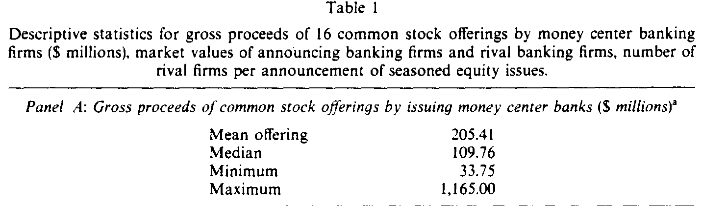
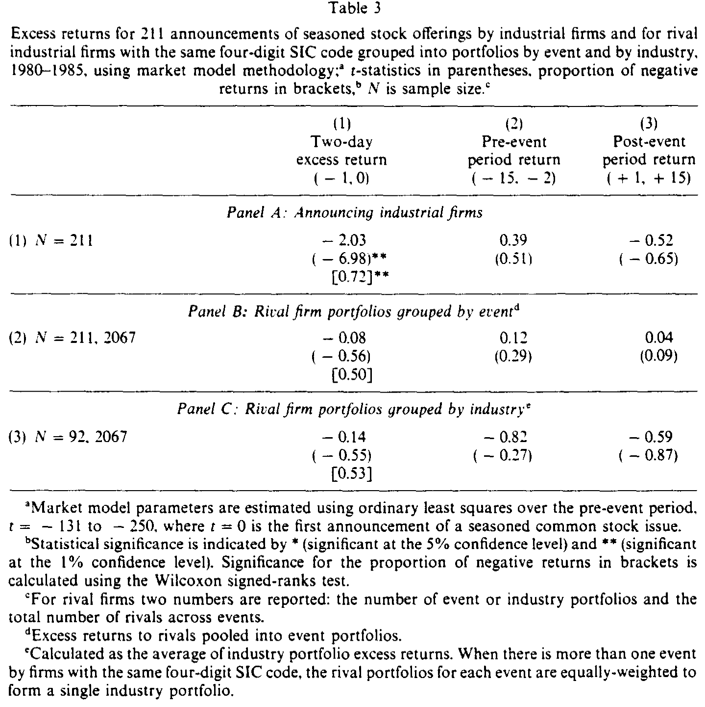
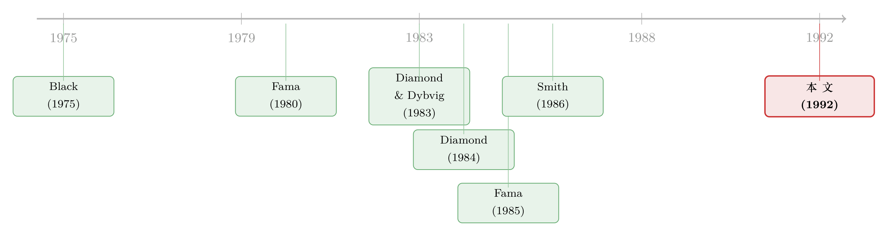

一家银行去发股票，凭什么别家银行也跟着跌？
本文读的是 Slovin, Sushka & Polonchek (1992, JFE)：当一家货币中心银行宣布增发普通股，不仅自己的股价跌（−2.89%），同业其他银行、乃至投资银行的股价也跟着跌（约 −0.6%，显著）；而工业企业做同样的事，竞争对手却纹丝不动（−0.08%，t = −0.56）。一道简单的「对照实验」，把「银行到底特不特殊」这个老问题，逼出了一个干净的答案。
1 一个反常的细节
先讲一件几乎所有公司金融学生都背得出来的「常识」：一家公司宣布增发普通股，股价多半会跌。这不是什么神秘现象，Smith (1986) 把那一代实证文献总结得清清楚楚——增发是个坏消息。Myers and Majluf (1984) 与 Miller and Rock (1985) 也早给出了道理：经理人掌握着投资者不知道的私有信息，只有当他觉得自家股票「被高估」时才愿意卖股票，于是「卖股票」这个动作本身就泄露了坏消息。
到这里都很平淡。但本文三位作者注意到了一个被人忽略的细节：当宣布增发的是一家银行时，跌的不止它自己——别的银行也跟着跌。
这就奇怪了。A 银行决定卖股票，凭什么 B 银行、C 银行的投资者要恐慌？它们又没增发。更耐人寻味的是另一半证据：换成工业企业，同样的剧本演不出同样的结局——某家工业公司增发，它的同行竞争对手们几乎无动于衷。
这就是全文的「张力」所在：同样一个「增发」动作，在银行业会外溢，在工业界却不外溢。差异从何而来？
2 两种关于银行的世界观
要理解这个差异，得先回到一场更老的争论：银行到底特不特殊？
一派是 Black (1975) 与 Fama (1980) 的看法：银行不过是一种「开放式共同基金」，负债是对资产组合的索取权，资产可以随时盯市 (mark to market)。在这个世界里，Modigliani-Miller (1958) 定理成立，银行的资产组合决策与价值无关，银行贷款相对于公开交易的债券没有任何信息优势。推论很干脆：单家银行的任何动作（包括增发）都不该对别家银行产生信息外部性。
另一派是 Diamond (1984, 1991)、Ramakrishnan and Thakor (1984)、Boyd and Prescott (1986) 与 Fama (1985) 的看法：银行的本职是监督借款人、收集并处理关于客户企业的不对称信息。正因为有这层信息优势，银行贷款才成为一种比公开发债更省成本的私募融资工具。这一脉的实证支撑也很扎实——贷款公告会给借款人带来正的股价反应（James 1987）。（关于「银行资产为什么外人看不透」这条线，可参见《银行的资产不是「看不懂」，只是「没意思」》。）
而真正把这条线推向「外部性」的，是 Diamond and Dybvig (1983) 和 Gorton (1985)：既然银行资产组合里压着大量外人无法分辨的私有信息，那么一家银行的坏消息，就可能让投资者重新评估所有银行的资产价值——这正是银行挤兑、银行业恐慌的微观根源。（这条「一家出事、全行业抖三抖」的逻辑，在今天有了新版本，可参见《四天，一条推特，挤垮一家银行》。）
两派给出的预测正好相反。问题是：怎么把它们放到数据里去对质？
3 真正关键的一步：把工业企业当「对照组」
本文最聪明的设计，是想到用「同业对手方的股价反应」当成一台信息探测器。
逻辑是这样的：如果一家公司的增发公告只释放了「关于它自己」的信息，那么同行的股价不该动；可一旦同行也显著下跌，就说明这个公告携带了全行业层面的信息。于是——
- 银行是「处理组」：如果 Diamond-Dybvig / Gorton 那一派对，银行增发应当外溢到别的银行。
- 工业企业是「对照组」：增发同样是坏消息（Myers-Majluf 机制一样适用），但若信息只是「公司特有」的，则同行不该有反应。
两组拿同一把尺子（事件研究）去量，差异就把「银行是否特殊」这个问题逼到了墙角。这是一种很漂亮的「差分」思路：不是去争论增发本身好不好，而是去比较外溢效应在两个行业之间的差。
但作者还加了关键的第三块拼图——监管。银行增发和工业企业增发有一个本质区别：它不完全是「自愿」的。监管者维持着以账面股权为主的最低资本充足率要求，还通过保密的现场检查 (bank supervision) 去评估贷款质量、勒令把次级资产减记、把坏账核销。一旦资本不达标，银行就被迫增发或收缩。于是——
银行的「增发」决策里，不只藏着经理人的私有信息，还藏着监管者关于这家银行资本与贷款组合质量的保密判断。而监管压力往往同时落在处境相似的一批银行头上，这就把各家银行的价值正相关地绑在了一起。
换句话说，银行增发外溢的，可能不只是「同业基本面相关」的信息，还有「监管者正在收紧」的信号。这让银行业的外部性比工业界强得多。
4 方法：一台标准的事件研究机器
识别的载体是再标准不过的市场模型 (market model) 事件研究。对每一只股票，用事件前 −250 至 −131 这 120 个交易日估计参数：
$$R_{it} = \alpha_i + \beta_i R_{mt} + \varepsilon_{it}$$
再用估计出的 \(\hat\alpha_i,\hat\beta_i\) 算事件窗内的超额收益：
$$AR_{it} = R_{it} - (\hat\alpha_i + \hat\beta_i R_{mt})$$
检验统计量（表中括号里的数）是「平均超额收益」除以它在 120 天估计期里得到的标准差。同业对手方被汇成事件组合 (event portfolio)，避免少数大事件主导结果；作者还另做了等权处理，结论几乎一样。事件日 \(t=0\) 取《华尔街日报》（银行则取《American Banker》）首次报道日，或 SEC 的注册日，孰早。
5 数据与样本
- 银行样本：1975–1988 年间，由美联储认定的 17 家货币中心银行 (money center banks) 的 16 起主要增发公告。对手方分三组：未公告的货币中心银行、主要上市区域性银行、上市投资银行。
- 工业企业样本：1980–1985 年间 211 起增发（取自 Slovin, Sushka & Hudson 1990，剔除金融、综合企业、公用事业 SIC 码，剔除二次发行与联合发行），对手方为所有共享四位 SIC 码的 CRSP 公司，共
2,067家、跨 92 个四位 SIC 行业。
银行的发行规模平均 $205 百万美元，约占发行方市值（平均 $2,446 百万）的 8.4%；工业企业平均 $55 百万，约占其市值（平均 $1,087 百万）的 5.1%。

Table 1
6 结果：一边外溢，一边沉默
先看发行方自己，两组都跌，而且跌得不轻：
- 工业企业发行方：两日 (−1, 0) 超额收益 −2.03%（t = −6.98）——和 Smith (1986) 综述里的「老结果」高度一致。
- 货币中心银行发行方：两日超额收益 −2.89%（t = −4.62）。
真正分出胜负的，是对手方。工业企业这边，同业对手方的两日超额收益只有 −0.08%（t = −0.56），事前 (−15, −2)、事后 (+1, +15) 窗口也都统计为零；把 211 个对手组合再聚成 92 个行业组合，依旧是零，而且没有一个行业组合的两日收益在 5% 水平上显著为负。结论干脆利落：工业企业的增发，只释放公司特有信息。 这一点和 Hertzel (1991) 关于「工业企业回购没有同业效应」的发现互相呼应。

Table 3
可银行那边完全是另一幅景象。同业对手方银行显著下跌：合并的对手方银行组合约 −0.6%（t ≈ −3.2，1% 水平显著）；拆开看，未公告的货币中心银行、区域性银行三组，两日超额收益均显著为负（t 值分别约 −2.4、−2.5）。作者做的均值差检验 (difference-in-means test) 拒绝了「银行 vs 工业企业，对手方反应相等」的原假设——两个行业的外溢，确实不是一回事。
于是反转出现：作者顺手又量了一组本不该相关的对手方——投资银行。按 1933 年《格拉斯-斯蒂格尔法案》(Glass-Steagall Act)，商业银行与投资银行被法律切开。可结果是，商业银行增发同样让投资银行股价显著下跌（t ≈ −2.1）。这说明在市场眼里，商业银行与投资银行的业务价值是高度相关的——那道法律上的分界线，是「人为的」。
把上面三组数字摆在一起，故事就闭环了：增发这个动作在工业界只是「自家的事」，在银行业却是「全行业、甚至跨行业的事」。差异不来自增发本身，而来自银行资产组合里那层看不透的私有信息，以及监管把各家银行命运绑在一起的结构。
7 文献脉络
这条研究的起点，是两种针锋相对的银行观：Black (1975)、Fama (1980) 把银行看成「无信息优势的共同基金」；Diamond (1984)、Fama (1985) 等人则论证银行靠监督与信息处理而独特。Diamond and Dybvig (1983)、Gorton (1985) 进一步把这种独特性推到「信息外部性 → 银行业恐慌」的高度。与此平行的另一条线，是增发的信息含量：Myers and Majluf (1984)、Miller and Rock (1985) 给出了「增发即坏消息」的理论，Smith (1986) 做了实证总结。
本文的位置，恰好是这两条线的交汇点：它借用「增发公告」这件已被研究透的事，去检验「银行是否特殊」这件还在争论的事，并用工业企业做对照，把识别做干净。

8 评论与延伸（Q&A + 研究方向）
(a) 几个可能的疑问
Q：只有 16 起银行增发，样本会不会太小、结论靠不住？
这是本文最该被盯住的软肋。16 个事件意味着统计功效有限，且高度依赖货币中心银行这一特定群体。作者用事件组合汇总并辅以等权稳健性，部分缓解了「少数事件主导」的担忧；但对手方银行 −0.6% 的效应能在 1% 水平显著，靠的是对手方组合内标准误很小（横截面上多家银行）。换句话说，显著性更多来自对手方维度的样本量，而非发行事件数。
Q：对手方银行下跌，会不会只是「行业基本面相关」，而非「监管信号」？
本文无法把这两条机制完全分开——它证明了外溢存在，也讲了一个监管驱动相关性的故事，但没有一个独立变量去把「监管压力」从「资产组合相关」里剥出来。这正是后续研究的空间（见下）。
Q：为什么银行发行方跌得（−2.89%）比工业企业（−2.03%）还狠？
一个自然的解读是：银行增发往往不是纯自愿，而带着「监管逼着补资本」的负面含义，所以坏消息更重。但本文没有直接区分「自愿增发」与「被迫增发」，这个解释仍是推断而非证据。
Q：投资银行也跟着跌，真能证明 Glass-Steagall「人为」吗？
它证明的是市场把两类机构的业务价值视为高度相关，这与「业务上日益趋同（过桥贷款、高杠杆交易、海外承销）」的制度背景一致。但「相关」不等于「监管分隔无意义」——法律分隔可能仍在风险隔离等维度发挥作用，本文的证据只触及估值相关性这一面。
Q：这和「贷款损失准备金公告引发同业传染」是一回事吗？
机制同源（银行资产不透明 → 单家信号外溢），但触发事件不同。增发是「资本侧」的主动决策，准备金调整是「资产侧」的披露。两者互为补充，可参见《银行为什么不肯承认坏账？》 与《保单持有人会用脚投票》。
(b) 几个可能的研究问题与提案
1. 把「监管压力」从「基本面相关」里剥出来。 【经济故事】本文混在一起的两条机制，可以用监管资本充足率的外生变动来分离：如果外溢主要来自监管信号，那么在监管收紧（如巴塞尔协议引入、压力测试年份）前后，外溢强度应当系统性变化。 【可行性】中。需要银行层面的监管资本数据 + 增发事件，识别可借助监管规则的分阶段实施做差分。难点在外生事件偏少。
2. 外溢的「网络」结构：谁跟谁一起跌？ 【经济故事】若外溢真来自资产组合相关，那么贷款组合越相似（同行业敞口、同地区、共同辛迪加贷款参与）的银行，跌得应当越多。把对手方反应按「组合相似度」排序，可直接检验机制。 【可行性】中高。今天有 syndicated loan（如 DealScan）数据可构造银行间贷款重叠度，事件研究框架现成。
3. 跨市场外溢：增发信号会不会传到这些银行的债券与 CDS？ 【经济故事】如果增发携带的是「资产质量/监管」信息，那么对手方银行的信用利差、CDS 应当同步走阔——而且债券对「下行信息」可能比股票更敏感。 【可行性】中。需要对手方银行的公司债成交/CDS 数据，时段需落在 CDS 市场成熟之后（故须用更近期样本重做本文设计）。这与「信用市场流动性」方向天然契合。
4. 外资持有人会放大还是抑制外溢？ 【经济故事】若对手方银行的边际投资者中外资占比更高，外溢可能因「信息劣势 + 一有风吹草动就撤」而被放大；反之，本地长期机构可能抑制传染。 【可行性】中。需对手方银行的投资者构成数据（如 13F、跨国持股库），识别上可用「可投资度」之类的外生变动。
9 我的判断
贡献。 这篇文章的价值不在数据规模，而在设计的干净：用一件被研究透了的事（增发是坏消息），借工业企业做对照组，把「银行是否特殊」这个抽象争论，压缩成一个可检验、可对比的外溢系数差。「银行增发外溢、工业企业不外溢」的对比本身就极具说服力，而「商业银行增发拖累投资银行」更是顺手给 Glass-Steagall 的人为性提供了一个漂亮的旁证。
对识别的担忧。 最大的问题是 16 起事件的小样本，以及两条机制（基本面相关 vs 监管信号）始终缠在一起、未被分离。本文把它们都讲成了一个故事，但严格说，证据只支持「外溢存在」，不足以判定外溢的来源。此外，货币中心银行是高度特殊的群体，结论能否外推到区域性银行、乃至今天的银行体系，需要谨慎。
后续想看到什么。 我最想看到的，是用现代的辛迪加贷款重叠数据，把外溢的「网络」画出来——如果跌得最狠的恰是贷款组合最相似的对手方，那本文的机制就被钉死了。再往前一步，把同样的设计搬到公司债和 CDS 市场，看看「资本侧的坏消息」如何在信用市场里传染，会比单看股价更有信息量。
参考文献
Black, F. (1975). Bank funds management in an efficient market. Journal of Financial Economics 2, 323–339.
Boyd, J. and E. Prescott (1986). Financial intermediary coalitions. Journal of Economic Theory 38, 211–221.
Diamond, D. (1984). Financial intermediation and delegated monitoring. Review of Economic Studies 51, 393–414.
Diamond, D. and P. Dybvig (1983). Bank runs, deposit insurance, and liquidity. Journal of Political Economy 91, 401–419.
Fama, E. (1980). Banking in the theory of finance. Journal of Monetary Economics 6, 39–57.
Fama, E. (1985). What's different about banks. Journal of Monetary Economics 15, 29–39.
Gorton, G. (1985). Bank suspension and convertibility. Journal of Monetary Economics 15, 177–193.
Hertzel, M. (1991). The effects of stock repurchases on rival firms. Journal of Finance 46, 707–716.
James, C. (1987). Some evidence on the uniqueness of bank loans. Journal of Financial Economics 19, 217–235.
Miller, M. and K. Rock (1985). Dividend policy under asymmetric information. Journal of Finance 40, 1031–1051.
Myers, S. and N. Majluf (1984). Corporate financing and investment decisions when firms have information that investors do not have. Journal of Financial Economics 13, 187–221.
Ramakrishnan, R. and A. Thakor (1984). Information reliability and a theory of financial intermediation. Review of Economic Studies 51, 415–432.
Slovin, M., M. Sushka, and C. Hudson (1990). External monitoring and its effect on seasoned common stock issuance. Journal of Accounting and Economics 12, 397–417.
Smith, C. (1986). Investment banking and the capital acquisition process. Journal of Financial Economics 15, 3–29.